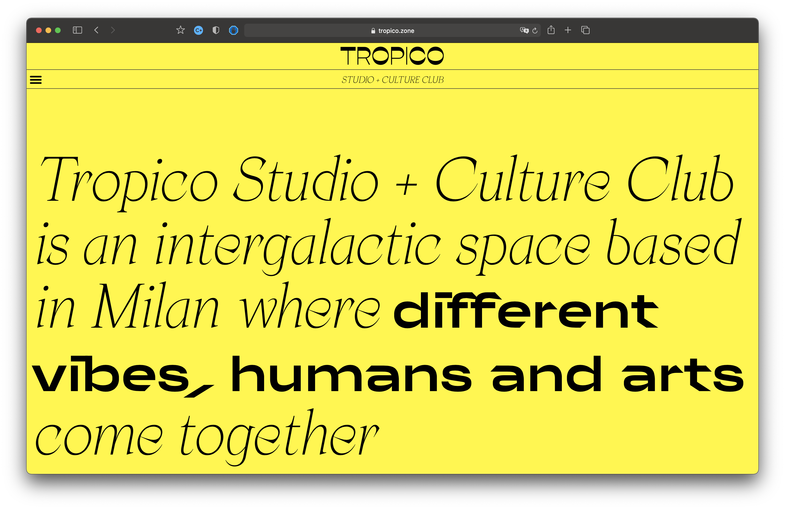
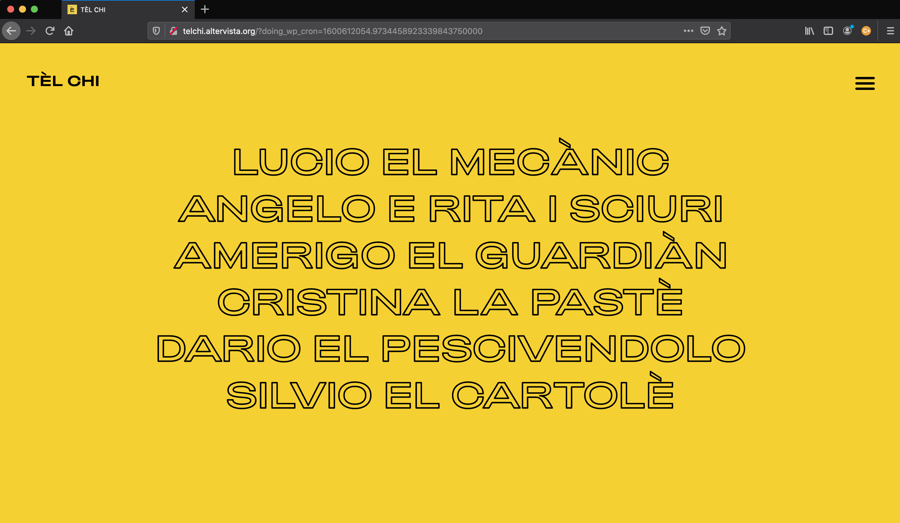
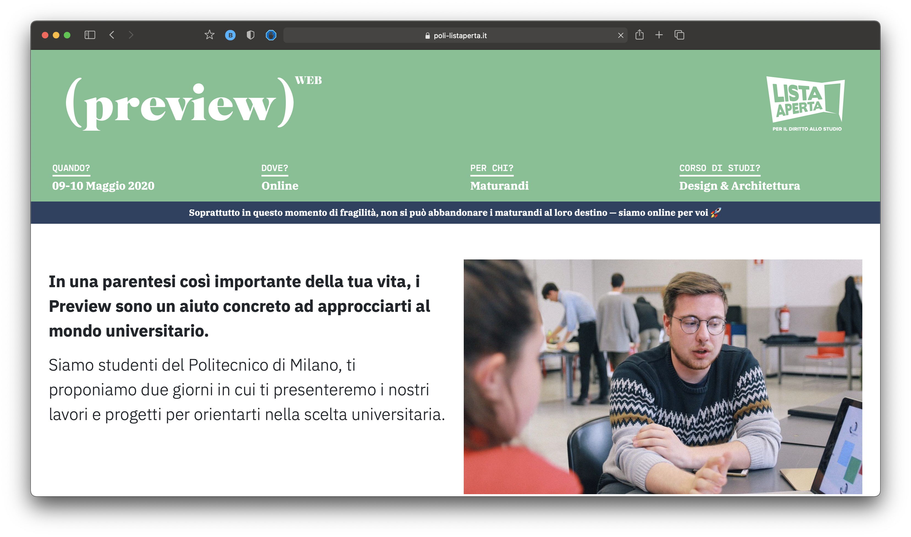

Project
Tropico.Zone is a creative studio which browses and curates inspiring content and ideas to stimulate and stun. It communicates through digital media and offline.
Tropico is a culture club dedicated to many-sided culture. Content, events and ever changing projects are the occasion to encounter curious minds which bring us their own ideas of art.
Role
Web Design, Coding, wordpress develop, concept, Editorial content, graphic design, Group coordination.
Team
Marco Previdi, Marco Paris.

Project
Tel Chi Tèl Chi has the objective of telling Milan by
To rediscover a human connection
Who have not stopped practicing his charm
And in a century as "digital" as ours.
When she said: We want to disprove Mrs. Rita
"Now you can't be together with mobile phones anymore.
Is it true that we are just individualists and that the potential for dialogue no longer exists?
Role
Web Design, Coding, wordpress develop, concept, Editorial content, graphic design, Group coordination.
Team
Elena Buttolo, Caterina Cedone, Marco Gabriele, Francesca Girola, Josè Limbert.

Project
Preview In such an important part of your life, Previews are a concrete help to approach the university world. We are students of the Politecnico di Milano, we propose two days in which we will present you our works and projects to orient you in your university choice.
Role
Web Design, Coding, Html, Css, concept, Editorial content, graphic design, Group coordination.
Team
Andrea Silvano.

Project
AINA is a voluntary association that operates in Italy and around the world collecting the support of moral associations, both secular and not. AINA collaborates with the American Foundation March To The Top. The overall physiognomy of AINA has remained constant over time even though some of the people who have worked for and around it have changed: all have left an important trace in the history of the Association. Today AINA's structure is made up of a Board of Directors; a Group of Operations Managers in Kenya, a body of supporters and a large number of volunteers.
Role
Web Design, Coding, Html, Css, Js, Basic NodeJs, concept, Editorial content, graphic design, Group coordination.
Team
Andrea Silvano, Riccardo Vitali.